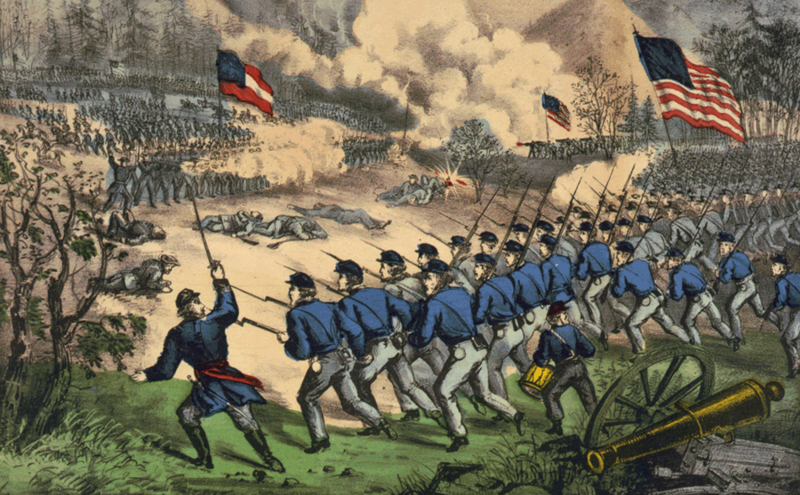

|
At the Battle of Cedar Mountain, Confederate forces under
Thomas J. "Stonewall" Jackson managed to snatch victory from
the jaws of defeat. The battle thus became an important step
in turning back the Union offensives launched in summer of
1862, a task that was completed 19 days later at Second
Manassas.
By July of 1862, George McClellan's peninsular campaign
had essentially failed, and he had ordered the withdrawal of

Lt. Gen. "Stonewall" Jackson.
|
Union troops from the area around Richmond. To the south,
however, Union general John Pope was enjoying a fair amount
of success. A portion of Pope's Federal forces, led by
General Nathaniel Banks, captured the town of Culpeper and
made plans to move further south.
To neutralize the threat, 14,000 troops under Stonewall
Jackson were sent to halt the Union's advance. Jackson was
not himself aware that Union troops held the town of
Culpeper, and so when the Confederates arrived there on the
afternoon of August 9th, they essentially stumbled into an
ambush. Union artillery pounded the southerners as General
Jubal A. Early attempted to organize a line of artillery and
infantry with which to fight back. The artillery battle
lasted for three hours and claimed the lives of many
Confederates.
At 5:00 that afternoon, Banks ordered a pair of infantry
attacks against the poorly organized Confederate line. The
attacks broke through, and trapped many of Jackson's troops
on the narrow, winding road leading to Culpeper. In the
confusion a substantial number of southern soldiers were
killed, while others threw down their guns and fled. Jackson
arrived on the scene in the midst of this panicked retreat,
and he responded swiftly. Jackson drew his sword, the only
time this is known to have happened during the war, and he
himself led the Confederate countercharge. At the same time,
fresh troops under General A.P. Hill arrived. This gave the
Confederates a 2-to-1 advantage, and the exhausted Union
forces were forced to fall back. What would have been a
decisive defeat for the Confederates instead became a
hard-won victory. The Federal forces suffered 2,381
|

An 1862 depiction of Cedar Mountain,
from Currier & Ives.
|
casualties, the Confederates 1,276. So many men were wounded
so quickly that some soldiers called the battle "Slaughter
Mountain" in their letters home.
On the next day, August 10th, Union leadership decided
not to continue the battle, and requested permission under a
flag of truce to gather their wounded and bury their dead.
Jackson and his troops withdrew that evening. Less than a
month later, the same armies would meet again at the Second
Battle of Manassas. Victory would be Jackson's on that
occasion as well. Pope was forced to join McClellan in
withdrawing from Virginia, giving the initiative to Robert
E. Lee and allowing him to launch an offensive into Maryland
in September of 1862. It would be two years before Union
forces would once again penetrate so deeply into Virginia.
Source: Joan Waugh, ed., Facts on File Encyclopedia of American
History: Civil War and Reconstruction, 1856 to 1869 (New York: Facts on
File, 2003), 53.
|